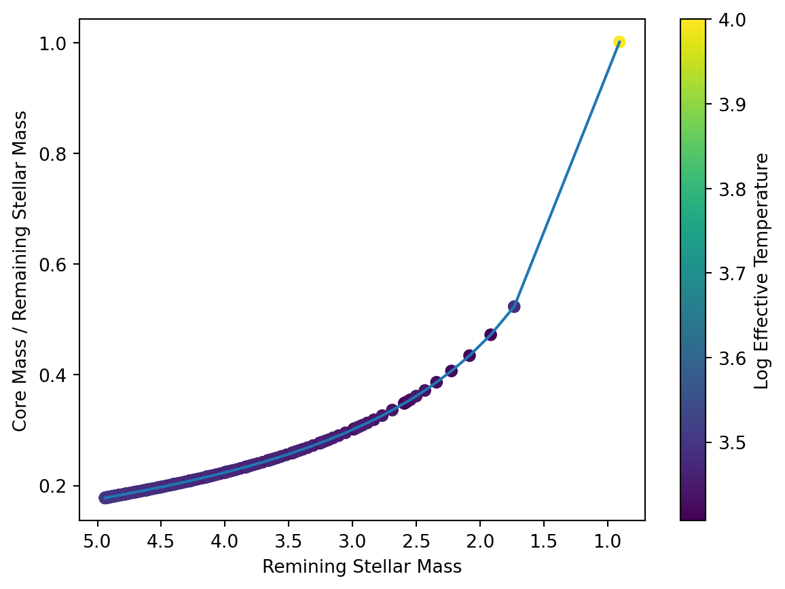
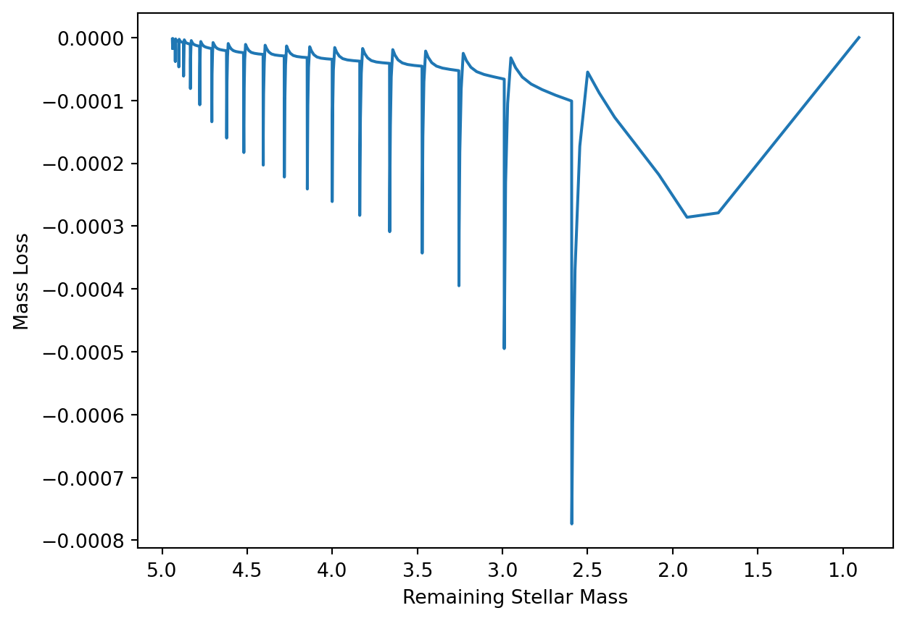

The “Padova” stellar evolution models are among the most sophisticated and frequently used. These models allow the user to examine the physical properties of stars in different evolutionary phases. The most recent updates to the models are described in Pastorelli et al. (2020); the various references included therein allow a complete perspective on the historical development of the models.
The Padova models have been used to create the plots on the following two slides, which show a model of a 1 Solar mass star. In the first plot, the luminosity is plotted versus surface temperature, with points color-coded by age. In the second plot, mass loss rate is plotted against age.
Using your understanding of stellar evolution, write a complete description of the physical changes that are occurring as the star evolves in this diagram. What stage(s) of stellar evolution are being tracked? How do you know? What happened to the star immediately before this part of its evolution? What do you expect to happen immediately after? Your response should include all aspects of the physical processes at work in the star.
Answer: The plots above are tracking the evolutionary stages of a 1 solar mass star after He core flash (end of RGB) and into early AGB. Below is a list that describes the evolutionary stages of the model in order.
He Core Flash
He core continued to collapse during the RGB, becoming increasingly electron degenerate.
Significant neutrino loss caused a negative temperature gradient (temperature inversion)
Density and temperature increse enough for triple-alpha process to start, causing a nearly explosive energy release
He shell is activated, with the core joining shortly after, removing temperature inversion
Luminosity generated by He burning core is comperable to that of an entire galaxy, but only lasts for a couple seconds, with most of the energy never reaching the surface, rather getting absorbed by the overlying layers.
Horizontal Branch
The envelop is contracting, increasing effective temperature, and causing convection zones to arise in both the core and envelope.
Blueward motion is essentially helium-burning analog of hydrogen-burning in MS, just on a much shorter timescale
At bluest point, the mean molecular weight has increased such that the core begins to contract, causing the envelop to expand and cool.
Shortly after starting the move redward, the helium core is exhausted, and the CO core continues to collapse.
Pulsations can occur due to instabillities.
The He shell narrows and the temperature increases, which causes the surrounding layers to expand and cool, causing a temporary turn-off for H-burning shell.
He exhausted core contracts, neutrino production increases, core cools slightly
Early Asymptotic Giant Branch
He-burning-shell analog to H-burning-shell RGB; He-burning shell dominates energy output (H-burning shell is nearly inactive)
Expanding envelop initially absorbs most of the energy, but as the effective temperature continues to decrease, the convenctive envelope deepens again, creating a second dredge-up that increases He and N contents of the envelope
Problem 2
The Padova evolutionary models calculate the masses in the cores and envelopes of each model star in each time interval. Here we will consider the model stars that are in the TP-AGB phase after log(t)=8.04 years; these are stars whose initial masses were 5.11 Solar masses or larger. More massive stars have evolved completely, and less massive stars have not yet reached the TP-AGB phase. Using the file “Padova_log_age_8.04.dat” on Moodle, create two plots:
Show the ratio of core mass (column labeled “McoreTP”) to remaining star mass (column labeled “Mass”) as a function of remaining star mass. Bonus “points” if you colorize the points by age!
Show the mass loss rate (column labeled “Mloss”) as a function of remaining star mass. Bonus “points” if you colorize the points by age!
As remaining stellar mass increases, does the ratio of core mass to total mass increase or decrease? How should this be interpreted, given the results we see in the mass loss versus time plot?
Answer: The code below generates the plots in parts 1) and 2).
As the remaining stellar mass increases, the ratio of core mass to total mass decreases. In other words, as we lose mass, the core to total mass ratio increases, indicating that the core is becoming the dominant mass in the star.
from astropy.io importasciiimport matplotlib.pyplot as pltimport numpy as npdata =ascii.read("Padova_log_age_8.04.dat")data["McoreTP/Mass"] = data["McoreTP"] / data["Mass"]# 2aplt.figure()plt.scatter(data["Mass"], data["McoreTP/Mass"], c=data["logTe"])plt.plot(data["Mass"],data["McoreTP/Mass"])plt.colorbar(label ="Log Effective Temperature")left, right = plt.xlim()plt.xlim(right, left)plt.xlabel("Remining Stellar Mass")plt.ylabel("Core Mass / Remaining Stellar Mass")# 2bplt.figure()plt.plot(data["Mass"],data["Mloss"])plt.xlabel("Remaining Stellar Mass")plt.ylabel("Mass Loss")left, right = plt.xlim()plt.xlim(right, left)


Problem 3
The Padova evolutionary models calculate the mass loss rate (in units of Solar masses per year) using a Reimers approximation at each time interval:
where L, R, and g are in Solar units. From the second graph in the first problem, we see that the mass loss rate goes very high in the last time intervals. The model values at the last calculated time (\(\log t = 10.05\), where t is in units of years) are as follows:
The surface gravity is expressed units of cm sec\(^{-2}\).
Using a value of \(\eta = 0.25\), find
The radius of the model star in solar radii (Is it what you would expect?)
The value of the mass loss rate in solar radii.
Answer: The code chunk below calculates the stellar radius using the Stefan-Boltzmann Law
\[L = 4\pi R^2\sigma T^4.\]
Using this equation, we get an estimated radius of around 7.4 solar radii, which is reasonable considering we are dealing with a start that was initially around 5 solar masses and it is going through periods of pulsation.
Using the calculated radius in part a) and solving for the luminosity, temperature, and surface gravity in the equations provided, we can use the given formula for mass loss,
to solve for part b). Note that we get a value that is essentially zero. This is in agreement with what we see in our plots for Question 2, where most of the mass of the star is in the core, so there is no fuel for the core to do fusion, so there are no thermal pulses, so there is no mass loss.
import astropy.units as uimport astropy.constants as cT =10**3.6634* u.KL =10**1.345* u.L_sung =10**3.676* u.cm / u.s **2eta =0.25# aR = np.sqrt(L / (4* np.pi * c.sigma_sb * T **4))print(f"{R.to(u.R_sun):.2f}")# bdMdt =-4E-13* eta * L / (g * R.to(u.R_sun))print(f"{dMdt.to(u.M_sun / u.yr):.2e}") # basically zero
{kind=link}
{kind=link}